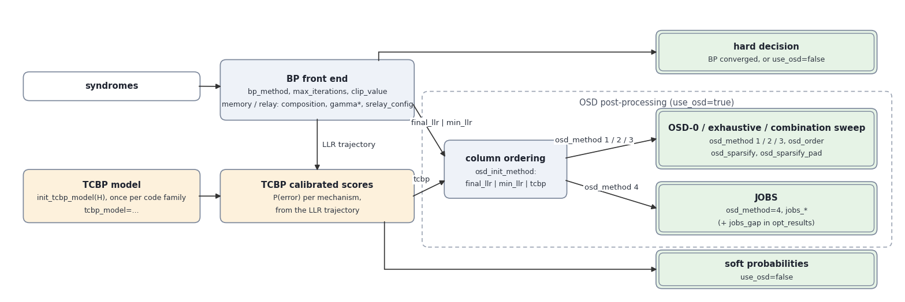

QEC Decoders
The cudaq-qec decoder interface (cudaq::qec::decoder) turns
syndromes into corrections. Choose from the pre-built decoders below, or use
the decoder framework to implement your own in C++ or Python. For runnable
programs, see the Decoders examples.
Pre-built QEC Decoders
CUDA-Q QEC provides pre-built decoders for a variety of use cases.
Decoder |
Decoder String Identifier |
Python |
C++ |
Realtime enabled |
Notes |
|---|---|---|---|---|---|
NVIDIA QLDPC Decoder¹ |
|
Yes |
Yes |
Yes |
Supports Relay BP, BP+OSD, and TCBP+JOBS |
NVIDIA Fusion Decoder |
|
Yes |
Yes |
Yes |
Multithreaded CPU MWPM decoder optimized for low-latency streaming |
Tensor Network Decoder¹ |
|
Yes² |
No |
No |
Exact Maximum Likelihood Decoder |
TensorRT Decoder¹ |
|
Yes³ |
Yes |
Yes |
GPU inference with a compatible trained model; decodes once the configured input is complete |
PyMatching Decoder |
|
Yes |
Yes |
Yes |
MWPM decoder for matchable codes such as the surface code |
Chromobius Decoder |
|
Yes |
Yes |
Yes |
Color-code (Möbius) decoder; constructed from Stim DEM text |
Look-Up Table Decoder |
|
Yes |
Yes |
Yes |
Simple LUT decoders; |
Sliding Window Decoder |
|
Yes |
Yes |
No |
Decodes syndromes in a sliding window; pairs with any inner decoder except the TensorRT Decoder |
pip install cudaq-qec[tensor-network-decoder] for Pythonpip install cudaq-qec[trt-decoder] for PythonHere’s a detailed overview of each:
Quantum Low-Density Parity-Check Decoder
The Quantum Low-Density Parity-Check (QLDPC) decoder leverages GPU-accelerated belief propagation (BP) for efficient error correction.
Since belief propagation is an iterative method which may not converge, decoding can be improved with a second-stage post-processing step. The nv-qldpc-decoder
API provides various post-processing options, which can be selected through its parameters.
For every option, its default and its constraints, see the full nv-qldpc-decoder API reference for
Python or C++.
Decoder Pipeline:
The decoder runs BP first. The BP result is either returned directly or used to order the columns of the parity-check matrix for an ordered-statistics decoding (OSD) post-processor. When a Trajectory-Calibrated BP (TCBP) model is supplied, the decoder computes a calibrated error probability for each error mechanism, which is either returned as the result or used as the OSD column ordering.

The API reference lists the supported configurations of this pipeline and the options and presets that select them.
Belief propagation methods:
The decoder supports several belief-propagation algorithms – sum-product, min-sum, and memory-based variants – selected via bp_method, with optional BP+OSD post-processing. For the complete list of methods, parameters, and defaults, see the nv-qldpc-decoder entries in the C++ and Python API reference.
Highlighted features:
Sequential Relay BP (
composition=1): chains multiple “relay legs” – sequential BP runs with different gamma configurations – to decode syndromes that stall a single BP pass. Requires:bp_method=3,gamma0,srelay_config, and eithergamma_distORexplicit_gammas.Gamma ensembling (
gamma_ensemble_size): an extension of Relay BP that explores multiple sets of gamma values in parallel on a single GPU (N independent “lanes”). The first lane to converge lets the decoder exit early, so slow lanes are terminated without adding to the decode time – narrowing the latency distribution and improving performance on hard-to-decode syndromes that would otherwise stall Relay BP. See Improving Relay BP decoding with gamma ensembles for a performance study.Trajectory-Calibrated BP (TCBP) (
tcbp_model): computes a calibrated error probability for each error mechanism from its LLR at every BP iteration, using a model that is fitted once per code family. The probabilities are returned directly (use_osd=false) or used to order the OSD columns (osd_init_method="tcbp"). Introduced in 0.9.0.Jittered OSD Beam Search (JOBS) (
osd_method=4): an OSD post-processor that runs on the GPU. For each shot it searches several perturbed column orderings and refines each OSD-0 solution with a beam search. It can also return a per-shot confidence value, the JOBS gap, for post-selection. Introduced in 0.9.0. See TCBP and JOBS for the decoding pipeline and Accuracy and Latency of TCBP+JOBS for measured accuracy and latency.Presets (
cudaq_qec.plugins.nv_qldpc.preset): named option sets for common configurations, such asbp60-osd0,relay-bpandtcbp-jobs. The API reference lists all of them.Noise learning (
learn_noise): learns the error rate of every mechanism of a detector error model from recorded detector data alone, using the TCBP model. See Noise Learning.
The QLDPC decoder nv-qldpc-decoder requires a CUDA-Q compatible GPU. See the CUDA-Q dependencies and compatibility list.
The decoder is based on the following references:
J. Roffe, D. R. White, S. Burton and E. T. Campbell, Decoding Across the Quantum LDPC Code Landscape, Physical Review Research 2, 043423 (2020).
T. Müller, T. Alexander, M. E. Beverland, M. Bühler, B. R. Johnson, T. Maurer and D. Vandeth, Improved belief propagation is sufficient for real-time decoding of quantum memory, arXiv:2506.01779 (2025).
B. Howe, S. Maurya, J. Olle, I. Basov, M. Li, J. G. Lietz, K. Young and K. M. Svore, TCBP+JOBS: GPU-Accelerated Quantum Error Correction Decoding and Noise Learning with Near-Optimal Accuracy, NVIDIA Research (2026).
Software repositories:
J. Roffe, LDPC: Python tools for low density parity check codes, GitHub (2022).
Relay-BP decoder, GitHub (
trmue/relay).
Usage:
import cudaq_qec as qec
import numpy as np
H_list = [
[1, 0, 0, 1, 0, 1, 1],
[0, 1, 0, 1, 1, 0, 1],
[0, 0, 1, 0, 1, 1, 1]
]
H_np = np.array(H_list, dtype=np.uint8)
decoder = qec.get_decoder("nv-qldpc-decoder", H_np)
std::size_t block_size = 7;
std::size_t syndrome_size = 3;
cudaqx::tensor<uint8_t> H;
std::vector<uint8_t> H_vec = {1, 0, 0, 1, 0, 1, 1,
0, 1, 0, 1, 1, 0, 1,
0, 0, 1, 0, 1, 1, 1};
H.copy(H_vec.data(), {syndrome_size, block_size});
cudaqx::heterogeneous_map nv_custom_args;
nv_custom_args.insert("use_osd", true);
auto d1 = cudaq::qec::get_decoder("nv-qldpc-decoder", H, nv_custom_args);
// Alternatively, configure the decoder without instantiating a heterogeneous_map
auto d2 = cudaq::qec::get_decoder("nv-qldpc-decoder", H, {{"use_osd", true}, {"bp_batch_size", 100}});
For a runnable example, see Getting started with the NVIDIA QLDPC Decoder.
For the full list of options, see the nv-qldpc-decoder API reference for
Python or C++.
Trajectory-Calibrated BP and Jittered OSD Beam Search
Belief propagation (BP) produces more information than its final hard decision. At every iteration, it updates a marginal log-likelihood ratio (LLR) for every error mechanism. A successful BP run turns those marginals into a syndrome-consistent correction. An unsuccessful run still leaves a trajectory: which mechanisms appeared likely to be in error, when that happened, whether the estimate was stable or oscillatory, and how it was moving when BP stopped.
Conventional BP+OSD decoders retain only one number from each trajectory. Most order the columns of the detector error matrix by the final LLR; minimum-LLR variants (Using Min-LLR OSD Initialization with BP+OSD) retain the minimum value reached during BP. Both give that single summary ordering to an ordered-statistics decoder (OSD), which discards valuable information. The final LLR can miss a strong signal from an earlier iteration, while a minimum LLR records the strength of an excursion but not its timing or stability. OSD then explores candidates around only that one summary ordering.
Starting in CUDA-Q QEC 0.9.0, the NV-qLDPC decoder provides two components that use this information more fully:
Trajectory-Calibrated BP (TCBP) is a soft reweighting predecoder. It maps each mechanism’s BP trajectory to a calibrated probability that the mechanism fired.
Jittered OSD Beam Search (JOBS) is a GPU-parallel OSD post-processor. It searches many perturbed column orderings and refines each OSD-0 solution with a bounded beam search.
TCBP uses AI in a deliberately lightweight form: a small neural network learns how BP trajectory shapes relate to error probabilities. Training uses simulations generated from the parity-check matrix (PCM), requires no experimental training set, and completed in under a minute in our development runs on NVIDIA GPUs. The default model has only 529 trainable weights. It is designed for reuse across physical error rates and code distances within the same code family, so one fit can support many decoding runs. The same model is what noise learning uses to estimate error rates from detector data; see Noise Learning.
The performance study uses 10 BP iterations. Larger iteration counts give BP more opportunities to explore different beliefs and give TCBP a longer trajectory to interpret, at the cost of additional BP work. Because the iteration count is part of the fitted model configuration, changing it requires a matching TCBP model.
The components are useful separately, but their combination is the focus of the performance study. TCBP gives JOBS syndrome-specific probability estimates, which JOBS uses to explore multiple syndrome-consistent corrections in parallel. During the search it can also retain the cheapest candidate found in every logical class, providing complementary information about the returned answer.
Configuration Choices
The main options selecting and tuning the TCBP path are:
tcbp_modelsupplies the model bytes returned byinit_tcbp_modelor the path to a saved model. Its BP method, iteration count, clipping value and processing precision must match the decoder.use_osd=Falsereturns TCBP’s soft probabilities.use_osd=True, osd_init_method="tcbp"instead uses its scores as the column ordering for OSD or JOBS.
JOBS is selected with use_osd=True, osd_method=4. Its principal search
options are:
jobs_draws(default 16) sets the number of orderings searched per round;jobs_rounds(default 1) permits additional rounds while they continue to improve the answer.jobs_draw_noise(default 1.0) sets the Gumbel perturbation applied after draw zero.jobs_beam_width(default 32),jobs_beam_depth(default 40) andjobs_beam_patience(default 8) bound the search from each OSD-0 solution.jobs_search_converged(default false) also searches BP-converged shots and returns the cheaper correction.osd_sparsify_pad(default 8) sizes JOBS’s mandatory \(K^*\)-based window. \(K^*\) is the smallest number of leading columns of the ordering whose span contains the syndrome; JOBS searches the first \(\lceil\)osd_sparsify_pad\(\times K^*\rceil\) columns.bp_batch_sizecontrols the shots in flight; the search’s device memory is allocated at construction forbp_batch_size * jobs_drawsitems.opt_results={"jobs_gap": True}returnsjobs_gapandjobs_gap_classfor every shot. The JOBS gap is the cost, in nats, of the cheapest correction the search visited in a different logical class minus the cost of the returned correction; it is a search-limited approximation of the complementary gap, and it is+inf(class-1) when no competing class was visited. This requires an observables matrix and supports at most 12 observables.
TCBP and JOBS require the sparse GPU path (use_sparsity=True) and
composition=0. Starting in 0.9.1, JOBS supports models with more than
8192 detector rows. The maximum detector count is limited by the memory of
the GPU; a model that is too large for the device is a construction error.
The maximum beam width is 64.
See the complete nv-qldpc-decoder option reference for
Python or
C++ for types, constraints and memory
behavior.
For a step-by-step example, see Decoding with TCBP and JOBS. For measured accuracy, serial latency, and post-selection results, see Accuracy and Latency of TCBP+JOBS.
NVIDIA Fusion Decoder
The nv-fusion-decoder is a multithreaded CPU decoder using minimum-weight
perfect matching (MWPM) for graphlike error models. It partitions detector data into
temporal blocks and fuses their solutions to reduce latency in streaming,
realtime decoding environments. It also supports offline batch decoding.
See the Python and C++ API references for configuration and usage details. For benchmark results and reproduction instructions, see Bounding realtime decode latency with NV-Fusion.
Tensor Network Decoder
The tensor_network_decoder constructs a tensor network representation of a quantum code given its parity check matrix, logical observable(s), and noise model. It can decode individual syndromes or batches of syndromes, returning the probability that a logical observable has flipped.
Due to the additional dependencies of the Tensor Network Decoder, you must
specify the optional pip package when installing CUDA-Q QEC in order to use this
decoder. Use pip install cudaq-qec[tensor-network-decoder] in order to use
this decoder.
Key steps:
Define the parity check matrix: This matrix encodes the structure of the quantum code. In the example, a simple [3,1] repetition code is used.
Specify the logical observable: This is typically a row vector indicating which qubits participate in the logical operator.
Set the noise model: The example uses a factorized noise model with independent bit-flip probability for each error mechanism.
Instantiate the decoder: Create a decoder object using
qec.get_decoder("tensor_network_decoder", ...)with the code parameters.Decode syndromes: Use the
decodemethod for single syndromes ordecode_batchfor multiple syndromes.
Usage:
# This example demonstrates how to use the get_decoder("tensor_network_decoder", ...) API
# from the ``cudaq_qec`` library to decode syndromes for a simple
# quantum error-correcting code using tensor networks.
import cudaq_qec as qec
import numpy as np
# Define code parameters
H = np.array([[1, 1, 0], [0, 1, 1]], dtype=np.uint8)
logical_obs = np.array([[1, 1, 1]], dtype=np.uint8)
noise_model = [0.1, 0.1, 0.1]
decoder = qec.get_decoder("tensor_network_decoder", H, logical_obs=logical_obs, noise_model=noise_model)
# Decode a single syndrome
syndrome = [0.0, 1.0]
result = decoder.decode(syndrome)
print(result.result)
# Decode a batch of syndromes
syndrome_batch = np.array([[0.0, 0.0], [0.0, 1.0], [1.0, 0.0]], dtype=np.float32)
batch_results = decoder.decode_batch(syndrome_batch)
for res in batch_results:
print(res.result)
The tensor_network_decoder is a Python-only implementation and it requires Python 3.11 or higher. C++ APIs are not available for this decoder.
Output:
The decoder returns the probability that the logical observable has flipped for each syndrome. This can be used to assess the performance of the code and the decoder under different error scenarios.
Note
In general, the Tensor Network Decoder has the same GPU support as the
Quantum Low-Density Parity-Check Decoder.
However, if you are using the V100 GPU (SM70), you will need to pin your
cuTensor version to 2.2 by running pip install cutensor_cu12==2.2.
For a runnable example, see Exact maximum likelihood decoding with NVIDIA Tensor Network Decoder.
TensorRT Decoder
The trt_decoder deploys a trained neural-network decoder (an ONNX model) through NVIDIA TensorRT for optimized GPU inference. Unlike the algorithmic decoders, it is trained on a specific code and noise model — you bring your own model. Python use requires pip install cudaq-qec[trt-decoder]. See the TensorRT Decoder API for configuration options, and the Deploying AI decoders with TensorRT example for the full train-to-deploy workflow.
For realtime use, configure the measurement mapping and a model whose input and output dimensions match the decoding problem. The standard enqueue path invokes inference once the configured input is complete; this does not provide native incremental streaming or guarantee a particular feedback latency. A compatible GPU and the TensorRT plugin are required.
For a neural predecoder followed by a conventional decoder, see AI Predecoding and Comparing Ising and Chromobius for Color-Code Decoding.
PyMatching Decoder
The pymatching decoder is a minimum-weight perfect matching (MWPM) decoder built on the open-source PyMatching library, suitable for matchable codes such as the surface code. It is selected by name through get_decoder and takes a parity-check matrix whose columns each have one or two set entries; per-edge priors are supplied via error_rate_vec. See the PyMatching Decoder API and the Matching-based decoding with PyMatching example.
Chromobius Decoder
The chromobius decoder is a color-code decoder built on the open-source Chromobius Möbius decoder. Unlike the matrix-based decoders, it is constructed from Stim detector-error-model (DEM) text rather than a parity-check matrix, and predicts logical observable flips directly. See the Chromobius Decoder API and the Color-code decoding with Chromobius example.
Chromobius can also decode the residual detector events left by an AI predecoder. See Comparing Ising and Chromobius for Color-Code Decoding for a comparison with Chromobius alone.
Sliding Window Decoder
Sliding-window decoding handles circuit-level noise across several syndrome rounds by processing syndromes before the full measurement sequence arrives, which reduces latency at the cost of higher logical error rates than decoding the entire sequence at once.
Whether that tradeoff is worthwhile depends on the noise model, code parameters, and latency budget. Since CUDA-Q 0.5.0, you can use any CUDA-Q decoder as the inner decoder and tune behavior mainly via window size and the other settings below. Each round must yield the same number of syndrome measurements; the decoder assumes no particular temporal structure of the noise, so you can still vary noise from round to round in experiments.
Key steps:
Obtain a detector error matrix and rates: Pass the parity check matrix
H(for exampledem.detector_error_matrix) anderror_rate_vecwith one entry per column ofH(for exampledem.error_ratesfrom the same DEM). The matrix must be in the sorted form expected bypcm_is_sortedfor yournum_syndromes_per_round; DEMs fromdem_from_memory_circuit(and its single-basis variantsz_dem_from_memory_circuit/x_dem_from_memory_circuit) are canonicalized. Hand-built matrices may needsimplify_pcm.Set the schedule and window: Provide
num_syndromes_per_round(the number of syndrome measurements per round) andnum_boundary_syndromes(the number of stabilizer syndromes fixed by the state-prep at the beginning and end of the circuit). Choosewindow_sizeandstep_sizesowindow_sizeandstep_sizestay within valid bounds andnum_rounds - window_sizeis divisible bystep_size, withnum_roundsinferred fromHandnum_syndromes_per_round.Pick an inner decoder: Use
inner_decoder_nameandinner_decoder_paramsfor the decoder that runs inside each window (for examplenv-qldpc-decoder). Optionalstraddle_start_round/straddle_end_roundcontrol cross-round mechanisms at window edges.Construct and run: Call
get_decoder("sliding_window", H, opts), thendecodeordecode_batch. Partial syndromes leave the decoder in an intermediate state until enough bits arrive; full parameter lists and behavior are in the Python and C++ sliding-window API references.
Background: Toward Low-latency Iterative Decoding of QLDPC Codes Under Circuit-Level Noise.
Usage:
import cudaq
import cudaq_qec as qec
import numpy as np
cudaq.set_target('stim')
num_rounds = 5
code = qec.get_code('surface_code', distance=num_rounds)
noise = cudaq.NoiseModel()
noise.add_all_qubit_channel("x", cudaq.Depolarization2(0.001), 1)
statePrep = qec.operation.prep0
dem = qec.dem_from_memory_circuit(code, statePrep, num_rounds, noise)
inner_decoder_params = {'use_osd': True, 'max_iterations': 50, 'use_sparsity': True}
opts = {
'error_rate_vec': np.array(dem.error_rates),
'window_size': 1,
'num_syndromes_per_round': code.get_num_z_stabilizers() + code.get_num_x_stabilizers(),
'num_boundary_syndromes': code.get_num_z_stabilizers(),
'inner_decoder_name': 'nv-qldpc-decoder',
'inner_decoder_params': inner_decoder_params,
}
swdec = qec.get_decoder('sliding_window', dem.detector_error_matrix, **opts)
#include "cudaq/qec/code.h"
#include "cudaq/qec/decoder.h"
#include "cudaq/qec/experiments.h"
#include "common/NoiseModel.h"
int main() {
int num_rounds = 5;
auto code = cudaq::qec::get_code(
"surface_code", cudaqx::heterogeneous_map{{"distance", num_rounds}});
cudaq::noise_model noise;
noise.add_all_qubit_channel("x", cudaq::depolarization2(0.001), 1);
auto statePrep = cudaq::qec::operation::prep0;
auto dem = cudaq::qec::dem_from_memory_circuit(*code, statePrep, num_rounds,
noise);
auto inner_decoder_params = cudaqx::heterogeneous_map{
{"use_osd", true}, {"max_iterations", 50}, {"use_sparsity", true}};
auto opts = cudaqx::heterogeneous_map{
{"window_size", 1},
{"num_syndromes_per_round", code->get_num_z_stabilizers() + code->get_num_x_stabilizers()},
{"num_boundary_syndromes", code->get_num_z_stabilizers()},
{"inner_decoder_name", "nv-qldpc-decoder"},
{"inner_decoder_params", inner_decoder_params}};
auto swdec = cudaq::qec::get_decoder("sliding_window",
cudaq::qec::decoder_init{dem}, opts);
return 0;
}
Output:
Once a decode step completes, results use the same types as other pre-built
decoders (cudaq_qec.Decoder in Python, cudaq::qec::decoder
in C++).
Build Your Own Decoder
To add a decoding algorithm, implement the CUDA-Q QEC decoder interface and register your implementation. The following sections describe the framework, show C++ and Python implementations, and cover migration of existing C++ plugins.
Decoder Framework cudaq::qec::decoder
The CUDA-Q QEC decoder framework provides an extensible system for implementing
quantum error correction decoders through the cudaq::qec::decoder base class.
Class Structure
The decoder base owns immutable model data and fixes the primary and auxiliary output contract when an instance is constructed. The relevant interface is:
class decoder {
public:
decoder(decoder_init inputs,
decoder_output_request requested_output =
decoder_output_request{decode_result_type::errors});
virtual decoder_result decode(
const std::vector<float_t>& syndrome) = 0;
virtual std::vector<decoder_result> decode_batch(
const std::vector<std::vector<float_t>>& syndrome);
decode_result_type get_result_type() const noexcept;
decoder_auxiliary_result_type
get_auxiliary_result_type() const noexcept;
protected:
const decoder_init& get_inputs() const noexcept;
std::size_t block_size;
std::size_t syndrome_size;
};
Key components:
Construction inputs:
decoder_initownsHand optionalO,D, error rates, and authoritative Stim DEM textFixed output contract: An instance returns either error frames or observable flips as its primary result and may return requested standardized auxiliary outputs
Block size: Number of modeled error mechanisms (columns of
H)Syndrome size: Number of detector values (rows of
H)Decoder result: Contains convergence status, primary values in the configured error or observable basis, requested standardized auxiliary outputs in
opt_results, and optional decoder-specific metadataMultiple decoding modes: Single syndrome or batch processing
Migrating C++ Decoder Plugins from 0.8.x to 0.9.0
CUDA-Q QEC 0.9.0 changes the C++ decoder construction API. Developers of
out-of-tree C++ plugins must update their source for the new interface.
Python users do not need to implement these C++ interfaces. However, Python
code that relied on PyMatching selecting observable output when O was
supplied must now pass output="observables" explicitly; see the
PyMatching API.
To migrate a C++ plugin:
Replace constructors that take
Hwith constructors that takecudaq::qec::decoder_initby value anddecoder_output_request. Forward both to the base constructor asdecoder(std::move(inputs), request).Read model data through
get_inputs().H,O,D, anderror_rate_vecare framework model data and must not be passed in the heterogeneous custom-parameter map or registered as plugin schema keys.Change custom creator signatures to accept
decoder_initby value,std::optional<cudaq::qec::decoder_output_request>, and the custom parameter map. The removedmake_pcm_decoderhelper must not be used.Choose the plugin’s default primary output when the optional request is empty, and validate explicit requests using
request.primary. The presence ofOdoes not select observable output.Reject unsupported auxiliary requests during construction, for example with
if (request.has_auxiliary_outputs()) throw std::invalid_argument(...). A plugin that acceptsresidual_detectorsmust return them indecoder_result::opt_results["residual_detectors"].Remove calls to the deleted
set_O_sparseandset_D_sparsemethods. The base constructor now derives the corresponding model state and buffer sizes. A streaming decoder supplies only its layer geometry throughinitialize_streaming_layoutduring construction.Override the cancellable
decodeanddecode_batchoverloads only if the decoder can honor a stop; the defaults ignore the token.
The following table maps the 0.8.x API to its 0.9.0 replacement:
0.8.x API |
0.9.0 replacement |
|---|---|
|
|
|
|
Creator arguments |
|
|
|
protected |
|
|
Choose and validate |
|
Put |
|
Perform model-dependent setup in the derived constructor after the base
constructor; use |
|
Implement the registered creator with |
For direct callers, construct decoder_init with the model data and pass a
cudaq::qec::decode_result_type to get_decoder when the result
basis must be explicit. It converts to a decoder_output_request with no
auxiliary outputs. Python callers use output="errors" or
output="observables". Python intentionally exposes only the primary result
basis; composition infrastructure uses decoder_output_request to request
standardized auxiliary outputs from a compatible decoder. See the PyMatching
API for the migration from its former O-implies-observables behavior.
Implementing a New Decoder in C++
To implement a new decoder:
Create decoder class:
class my_decoder : public cudaq::qec::decoder {
public:
my_decoder(cudaq::qec::decoder_init inputs,
cudaq::qec::decoder_output_request request,
const cudaqx::heterogeneous_map& params)
: cudaq::qec::decoder(std::move(inputs), request) {
if (request.has_auxiliary_outputs())
throw std::invalid_argument(
"my_decoder does not produce auxiliary outputs");
if (request.primary !=
cudaq::qec::decode_result_type::errors)
throw std::invalid_argument(
"my_decoder produces error frames only");
const auto& H = get_inputs().detector_error_matrix();
// Initialize from H and decoder-specific params.
}
cudaq::qec::decoder_result decode(
const std::vector<cudaq::qec::float_t>& syndrome) override {
return {/*converged=*/true,
std::vector<cudaq::qec::float_t>(block_size, 0.0)};
}
};
Register extension point:
class my_decoder : public cudaq::qec::decoder {
// ... constructor and decode() from above ...
CUDAQ_EXTENSION_CUSTOM_CREATOR_FUNCTION(
my_decoder,
static std::unique_ptr<cudaq::qec::decoder> create(
cudaq::qec::decoder_init inputs,
std::optional<cudaq::qec::decoder_output_request> output,
const cudaqx::heterogeneous_map& params) {
const auto request = output.value_or(
cudaq::qec::decoder_output_request{
cudaq::qec::decode_result_type::errors});
return std::make_unique<my_decoder>(
std::move(inputs), request, params);
})
};
CUDAQ_EXT_PT_REGISTER_TYPE(my_decoder)
The creator receives an owning decoder_init handle. Matrix-based plugins
read its sparse matrix projection; DEM-native plugins first require
has_stim_dem() and then read stim_dem().
Example: Lookup Table Decoder
Here’s a simple lookup table decoder for the Steane code:
class single_error_lut : public cudaq::qec::decoder {
private:
std::map<std::string, std::size_t> single_qubit_err_signatures;
public:
single_error_lut(cudaq::qec::decoder_init inputs,
cudaq::qec::decoder_output_request request,
const cudaqx::heterogeneous_map& params)
: cudaq::qec::decoder(std::move(inputs), request) {
if (request.has_auxiliary_outputs())
throw std::invalid_argument(
"single_error_lut does not produce auxiliary outputs");
if (request.primary !=
cudaq::qec::decode_result_type::errors)
throw std::invalid_argument(
"single_error_lut produces error frames only");
const auto& H = get_inputs().detector_error_matrix();
// Canonicalize before using each sparse column as an error
// signature so duplicate row indices cancel over GF(2).
auto H_e2d = H.canonicalize().to_nested_csc();
for (std::size_t qErr = 0; qErr < block_size; qErr++) {
std::string err_sig(syndrome_size, '0');
for (std::uint32_t row : H_e2d[qErr])
err_sig[row] = '1';
single_qubit_err_signatures.insert({err_sig, qErr});
}
}
cudaq::qec::decoder_result decode(
const std::vector<cudaq::qec::float_t>& syndrome) override {
cudaq::qec::decoder_result result{false,
std::vector<cudaq::qec::float_t>(block_size, 0.0)};
// Convert syndrome to string
std::string syndrome_str(syndrome_size, '0');
for (std::size_t i = 0; i < syndrome_size; i++)
syndrome_str[i] = (syndrome[i] >= 0.5) ? '1' : '0';
// Lookup error location
auto it = single_qubit_err_signatures.find(syndrome_str);
if (it != single_qubit_err_signatures.end()) {
result.converged = true;
result.result[it->second] = 1.0;
}
return result;
}
CUDAQ_EXTENSION_CUSTOM_CREATOR_FUNCTION(
single_error_lut,
static std::unique_ptr<cudaq::qec::decoder> create(
cudaq::qec::decoder_init inputs,
std::optional<cudaq::qec::decoder_output_request> output,
const cudaqx::heterogeneous_map& params) {
const auto request = output.value_or(
cudaq::qec::decoder_output_request{
cudaq::qec::decode_result_type::errors});
return std::make_unique<single_error_lut>(
std::move(inputs), request, params);
})
};
CUDAQ_EXT_PT_REGISTER_TYPE(single_error_lut)
Implementing a Decoder in Python
CUDA-Q QEC supports implementing decoders in Python using the @qec.decoder decorator:
Create decoder class:
@qec.decoder("my_decoder")
class MyDecoder:
def __init__(self, H, **kwargs):
# H is a scipy.sparse matrix or a dense numpy uint8 array,
# mirroring whatever was passed to qec.get_decoder().
# Pass it unchanged to Decoder.__init__ so the C++ base class
# stores a compact sparse representation without a dense allocation.
qec.Decoder.__init__(self, H)
self.H = H
# Initialize with optional kwargs
def decode(self, syndrome):
# Create result object
result = qec.DecoderResult()
# Implement decoding logic
# ...
# Set results
result.converged = True
result.result = [0.0] * self.get_block_size()
return result
Using custom parameters:
# Create decoder with custom parameters
decoder = qec.get_decoder("my_decoder",
parity_check_matrix,
custom_param=42)
Key Features
Soft decision decoding: Results are probabilities in [0,1]
Batch processing: Support for decoding multiple syndromes
Asynchronous decoding: Optional async interface for parallel processing
Custom parameters: Flexible configuration via heterogeneous_map
Python integration: First-class support for Python implementations
Usage Example
import cudaq_qec as qec
# Get a code instance
steane = qec.get_code("steane")
# Create decoder with code's parity matrix
decoder = qec.get_decoder('single_error_lut', steane.get_parity())
# Run stabilizer measurements
syndromes, dataQubitResults = qec.sample_memory_circuit(steane, numShots=1, numRounds=1)
# Decode a syndrome
result = decoder.decode(syndromes[0])
if result.converged:
print("Error locations:",
[i for i,p in enumerate(result.result) if p > 0.5])
# No errors as we did not include a noise model and
# thus prints:
# Error locations: []
using namespace cudaq;
// Get a code instance
auto code = qec::get_code("steane");
// Create decoder with code's parity matrix
auto decoder = qec::get_decoder("single_error_lut",
code->get_parity());
// Run stabilizer measurements
auto [syndromes, dataQubitResults] = qec::sample_memory_circuit(*code, /*numShots*/ numShots, /*numRounds*/ 1);
// Copy a single shot syndrome and decode
std::vector<qec::float_t> syndrome(
syndromes.data(), syndromes.data() + syndromes.shape()[1]);
auto result = decoder->decode(syndrome);